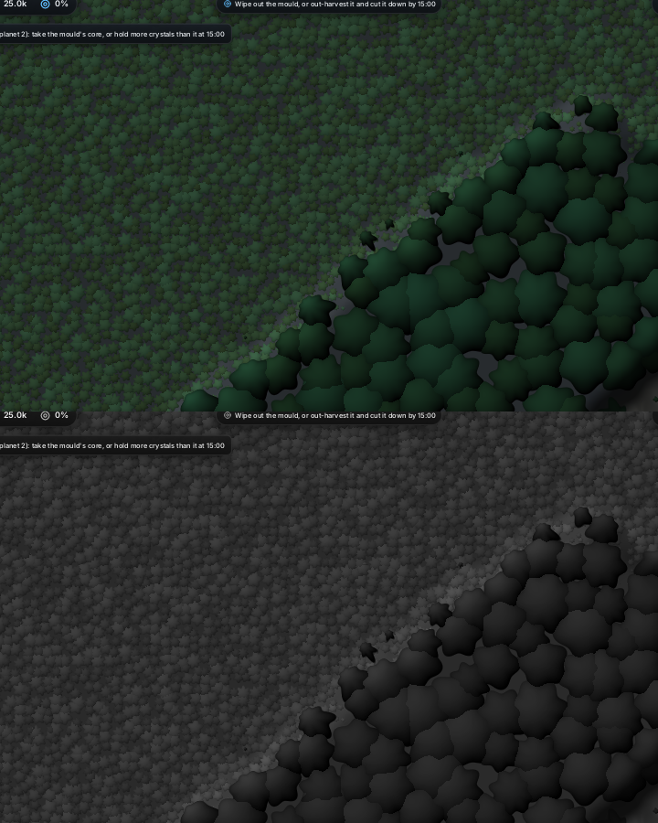
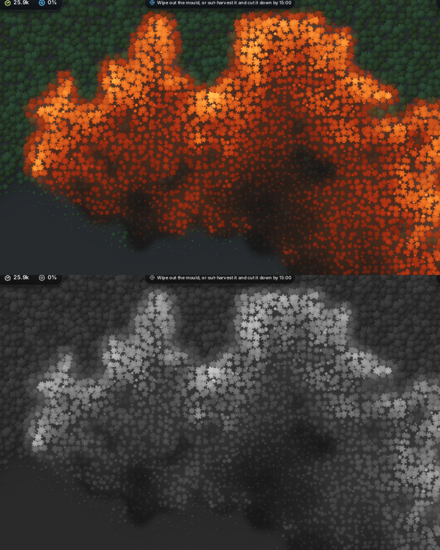
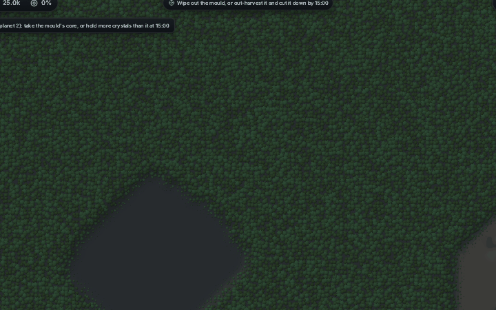
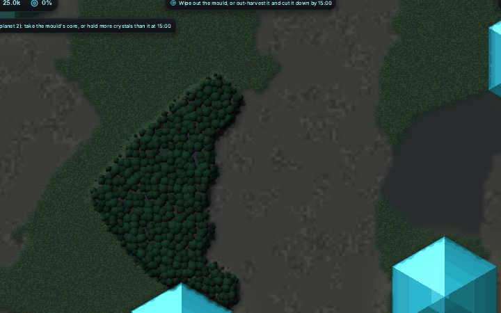
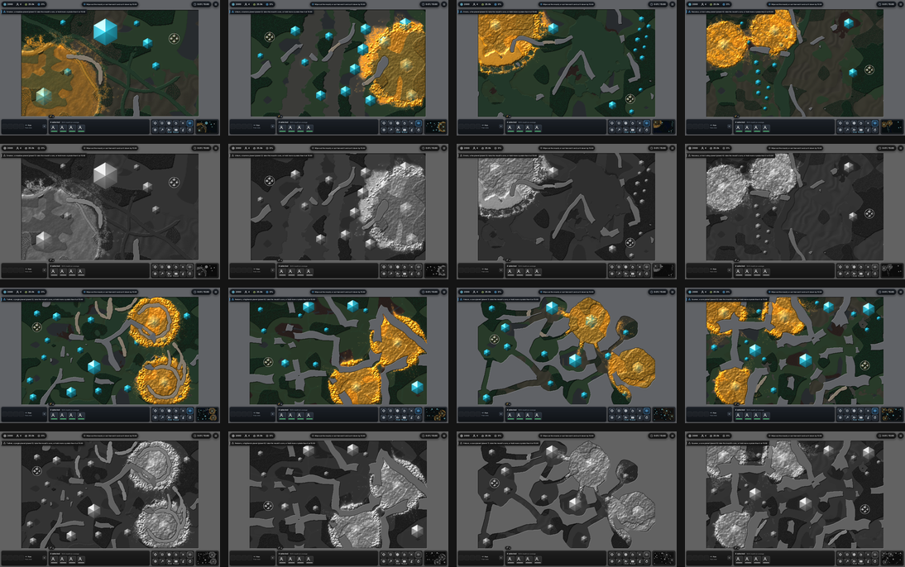

<title>Plants, Drawn Close</title>
<meta name="claude:viewport-fit-sides" content="cover">
<link rel="stylesheet" href="https://fonts.googleapis.com/css2?family=Inter:wght@400;600&family=Space+Grotesk:wght@500;700&display=swap">
<style>
/* One reading column; each picture full width with its numbers under it. */
:root {
  --bg: #f3f4f1; --fg: #1d221d; --muted: #5b645a; --line: #d5dad2; --accent: #c26a1a; --leaf: #2f5a52;
  --display: "Space Grotesk", "Segoe UI", system-ui, sans-serif;
  --body: "Inter", "Segoe UI", system-ui, sans-serif;
}
@media (prefers-color-scheme: dark) { :root:not([data-theme="light"]) { --bg: #121512; --fg: #e4e8e2; --muted: #9aa597; --line: #2b322b; --accent: #f0a050; --leaf: #8fc0b4; color-scheme: dark } }
:root[data-theme="dark"] { --bg: #121512; --fg: #e4e8e2; --muted: #9aa597; --line: #2b322b; --accent: #f0a050; --leaf: #8fc0b4; color-scheme: dark }
body { background: var(--bg); color: var(--fg); font-family: var(--body); line-height: 1.55; margin: 0; }
main { max-width: 760px; margin: 0 auto; padding-block: 32px 48px; padding-left: max(16px, env(safe-area-inset-left, 0px)); padding-right: max(16px, env(safe-area-inset-right, 0px)); display: grid; gap: 28px; }
h1, h2 { font-family: var(--display); text-wrap: balance; margin: 0; }
h1 { font-size: 2rem; }
h2 { font-size: 1.25rem; }
p { margin: 0; max-width: 65ch; }
.eyebrow { text-transform: uppercase; letter-spacing: .08em; font-size: .75rem; color: var(--leaf); font-weight: 600; }
section { display: grid; gap: 10px; }
figure { margin: 0; display: grid; gap: 8px; }
figure img { width: 100%; height: auto; border-radius: 6px; border: 1px solid var(--line); image-rendering: auto; }
figcaption { color: var(--muted); font-size: .9rem; }
.counts { display: grid; grid-template-columns: repeat(auto-fit, minmax(140px, 1fr)); gap: 8px 16px; font-variant-numeric: tabular-nums; }
.counts div { display: grid; gap: 2px; border-top: 1px solid var(--line); padding-top: 6px; }
.counts b { font-family: var(--display); font-size: 1.15rem; color: var(--accent); }
.counts span { font-size: .8rem; color: var(--muted); }
ul { margin: 0; padding-left: 20px; display: grid; gap: 4px; }
</style>
<main>
  <header style="display:grid;gap:8px">
    <div class="eyebrow">Larder World · plants thread · 2026-11-14</div>
    <h1>Plants, Drawn Close</h1>
    <p>Your notes: plants were "mostly just green blobs", the fire was blurry, and the game should look right zoomed in. The plants are now drawn per pixel as tufts, stems, bushes and tree crowns. Each one's size is the plant amount in that spot, so thin stands show ground between and full stands close up. Fire burns crown by crown, brightest at the advancing edge, and leaves dark char with glowing embers. Filmed in the game on software Vulkan; the GIFs are cropped, not scaled, so they are as sharp as the game.</p>
  </header>

  <section>
    <h2>Zoom 24: meadow meets jungle</h2>
    <figure>
      
      <figcaption>Planet 2 seed 1 at 2 s, zoom 24 (24 pixels a cell), colour above and grey below. Plants are muted greens. Meadow grass is small tufts about half a cell apart. Jungle trees are crowns about 1.7 cells apart, lit on the side toward the light, with dark gaps. At the edge of the jungle the crowns get smaller and sparser because there are fewer plants there.</figcaption>
    </figure>
  </section>

  <section>
    <h2>Zoom 24: meadow fire</h2>
    <figure>
      
      <figcaption>The same run with a bomb at 3 s, at 20 s. Each tuft burns with the heat at its centre, so the front has tongues and gaps. Freshly caught tufts burn a step hotter, toward yellow. Behind the front, the burnt ground is near-black grey, and heat that remains shows as small ember grains that shrink as it fades.</figcaption>
    </figure>
    <div class="counts">
      <div><b>25,000 → 25,858</b><span>slime from 2 s to 20 s</span></div>
      <div><b>4 of 4</b><span>soldiers alive (the squad stands well away)</span></div>
    </div>
  </section>

  <section>
    <h2>Zoom 12: the meadow fire, 1 to 45 s</h2>
    <figure>
      
      <figcaption>One frame per game second. The fire behaviour is unchanged from the fire round two page. Only how it is drawn has changed.</figcaption>
    </figure>
    <div class="counts">
      <div><b>28,655</b><span>slime at 45 s (25,000 at the start)</span></div>
      <div><b>66 ms</b><span>llvmpipe frame, median, on this view (56.6 before the plants were drawn per pixel)</span></div>
    </div>
  </section>

  <section>
    <h2>Zoom 6: a jungle fire, 1 to 40 s</h2>
    <figure>
      
      <figcaption>A bomb into the jungle at 3 s. At this zoom, grass tufts are about 3 pixels and still show as texture. Below about 2 pixels they fade to the plants' flat colour, so they don't shimmer.</figcaption>
    </figure>
  </section>

  <section>
    <h2>All eight planets, whole map</h2>
    <figure>
      
      <figcaption>Planets 1 to 8, seed 1, at 1 s, 266 by 164 pixels, with a grey copy under each. Zoomed all the way out, plants are flat dark green zones, below the slime in value. The crystals stay the only cyan.</figcaption>
    </figure>
  </section>

  <section>
    <h2>What drives it</h2>
    <ul>
      <li><b>From the simulation.</b> Every tuft and crown is sized by the plant amount at that spot. As fire eats the plants, the crowns shrink and disappear, and as plants regrow they come back. Where they sit and their shape are a fixed pattern, like the sand ripples.</li>
      <li><b>Under the slime.</b> Plants and char show through a thin slime film and disappear under the body.</li>
      <li><b>Cost.</b> On software Vulkan the frame went from 56.6 to 66.1 ms at zoom 12. The GTX 1070 has not been timed yet.</li>
    </ul>
  </section>
</main>
